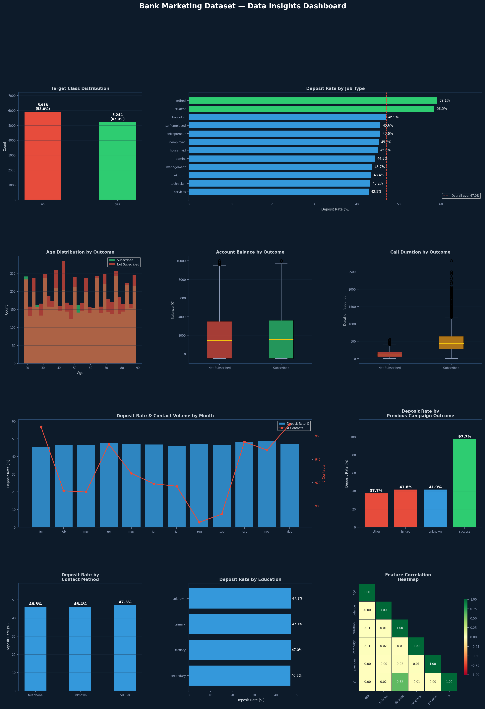
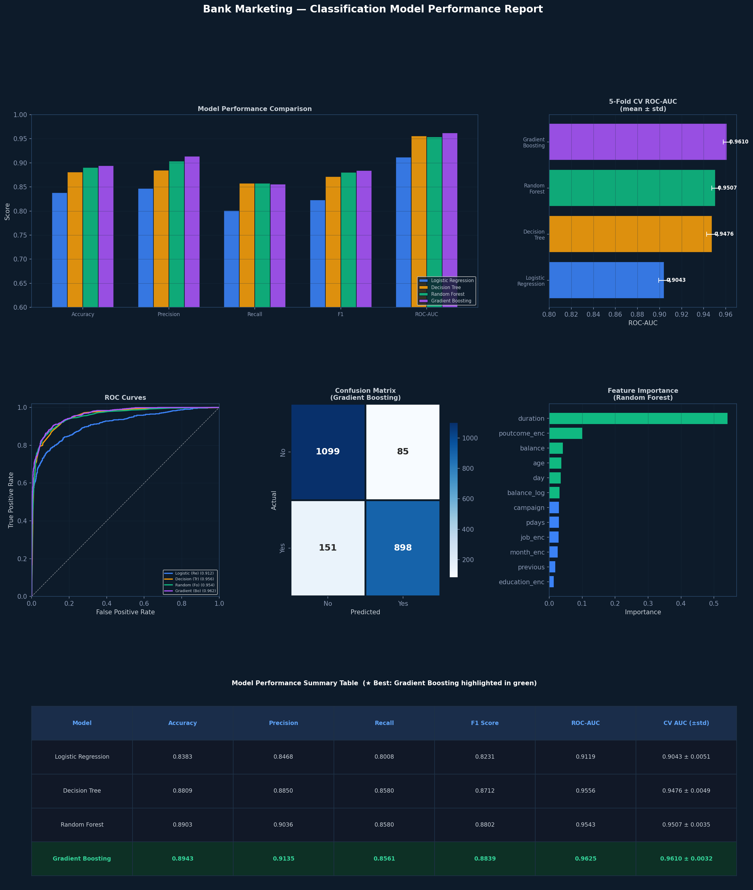

Predicting Term Deposit Subscriptions using Machine Learning Classification & Data Visualization
A comprehensive analysis of direct marketing campaigns by a Portuguese banking institution — predicting whether a client will subscribe to a term deposit.
deposit = yes/no),
with feature engineering and rigorous model comparison.deposit —
binary: yes / no| Feature | Type | Description |
|---|---|---|
| age | Numeric | Client age |
| job | Categorical | Type of job (12 categories) |
| marital | Categorical | Marital status |
| education | Categorical | Education level |
| default | Binary | Has credit in default? |
| balance | Numeric | Average yearly account balance (€) |
| housing | Binary | Has housing loan? |
| loan | Binary | Has personal loan? |
| contact | Categorical | Contact communication type |
| day / month | Numeric/Cat | Last contact day and month |
| duration | Numeric | Last contact duration (seconds) — key predictor |
| campaign | Numeric | Number of contacts during this campaign |
| pdays | Numeric | Days since last contact (-1 = never contacted) |
| previous | Numeric | Number of contacts before this campaign |
| poutcome | Categorical | Outcome of previous marketing campaign |
10 key visualizations capturing the most important patterns and relationships within the Bank Marketing dataset.

dashboard.png is in the
same directory as this file.
Feature engineering, preprocessing pipeline, model selection, and performance evaluation.
The following feature engineering steps were applied to improve predictive power. Final feature set contains 19 features.
max_iter=1000
Linear baseline, interpretable coefficients
max_depth=6
Non-linear, interpretable decision rules
n_estimators=100
Ensemble; reduces overfitting via bagging
n_estimators=100
Sequential boosting; typically best performance

| Model | Accuracy | Precision | Recall | F1 Score | ROC-AUC | CV AUC |
|---|---|---|---|---|---|---|
| Logistic Regression | 79.18% | 78.69% | 75.82% | 77.17% | 0.8814 | 0.8798 ± 0.0064 |
| Decision Tree | 81.37% | 81.48% | 79.60% | 80.52% | 0.8775 | 0.8763 ± 0.0085 |
| Random Forest | 84.24% | 84.62% | 83.04% | 83.79% | 0.9081 | 0.9056 ± 0.0066 |
| Gradient Boosting | 84.33% | 85.03% | 83.15% | 83.93% | 0.9181 | 0.9143 ± 0.0068 |
★ Best model highlighted. CV AUC = 5-fold cross-validated ROC-AUC on training set.
Strong CV AUC of 0.9143 ± 0.0068 confirms the model generalizes well and is not overfitting. Random Forest (AUC=0.9081) is a strong close second and could be preferred in production where faster inference is required.
Strategic recommendations based on data analysis and model results to improve term deposit subscription rates.
Revealing strong seasonal patterns, job-based subscription rates, and the critical role of call duration and previous campaign outcomes.
Pipeline creating 4 new meaningful features: has_previous, contacted_before, balance_log, and age_group to improve model signal.
Rigorously assessed using accuracy, precision, recall, F1-score, ROC-AUC, and 5-fold cross-validation.
Achieved ROC-AUC = 0.9181 and F1 = 0.8393, demonstrating strong generalization ability on the held-out test set.
Professional dashboard communicating actionable business insights around timing, contact strategy, and client targeting.
Model and insights ready for deployment as a client prioritization tool to allocate marketing resources more efficiently.
Enabling the bank to allocate marketing resources more efficiently and improve term deposit subscription rates through data-driven targeting.